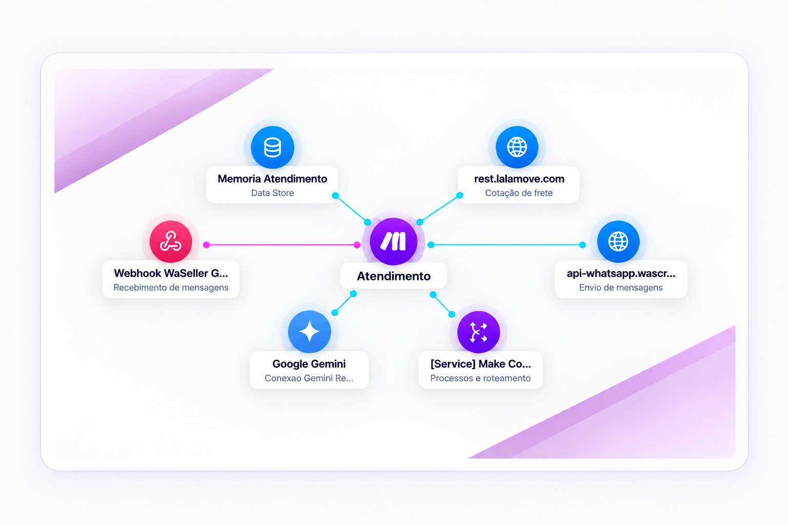
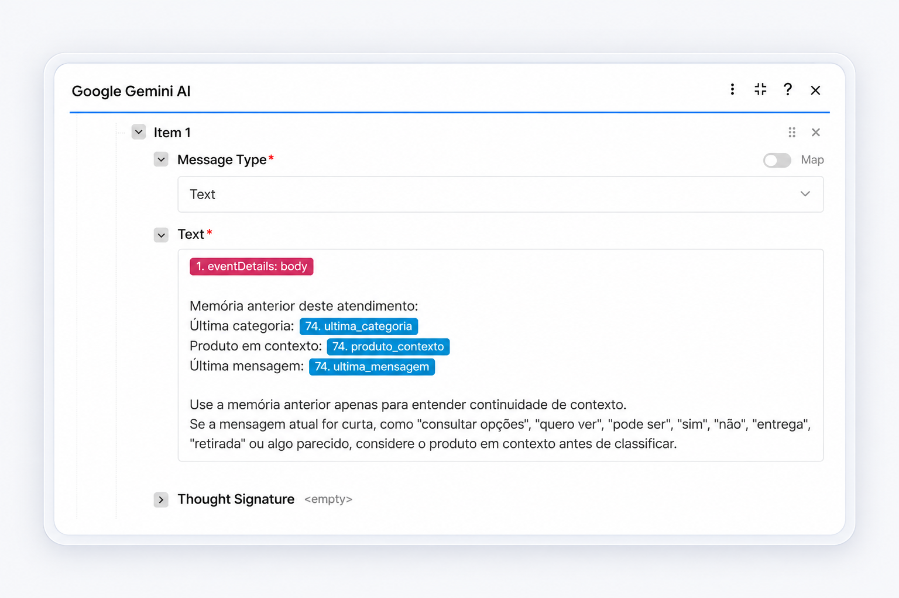
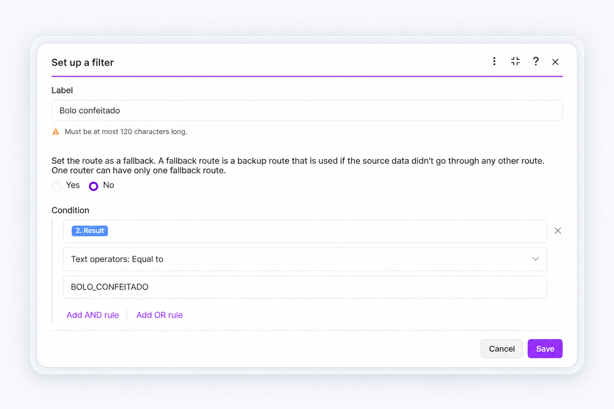

Automação Conversacional com IA
Projeto de automação de atendimento desenvolvido para integrar Inteligência Artificial Generativa, APIs, memória de contexto e regras de negócio em um fluxo conversacional executado em ambiente cloud.
Objetivo
Automatizar o atendimento inicial da Delícias by Rose®, reduzindo tarefas repetitivas e direcionando cada mensagem para o fluxo adequado com base na intenção da cliente e no contexto da conversa.
Arquitetura da solução
O fluxo recebe mensagens por Webhook, consulta a memória do atendimento em Data Store, utiliza o Google Gemini para classificação de intenção e direciona a conversa por regras de roteamento para respostas especializadas, integrações HTTP e APIs externas.
Status
Projeto em desenvolvimento, atualmente pausado para priorização da minha trajetória profissional em Quality Assurance.
O que foi implementado
- Recebimento de mensagens por Webhook.
- Persistência de contexto de atendimento em Data Store.
- Classificação de intenção com Google Gemini.
- Roteamento por categoria com regras e filtros no Make.
- Respostas especializadas por tipo de atendimento.
- Integrações via HTTP e APIs externas.
- Integração com a API da Lalamove para cotação de frete, utilizando JavaScript e autenticação HMAC-SHA256.
Desafios técnicos
- Manter o contexto entre mensagens curtas ou ambíguas durante o atendimento.
- Classificar corretamente a intenção da mensagem antes de direcioná-la ao fluxo especializado.
- Estruturar regras de roteamento para diferentes categorias de atendimento.
- Integrar serviços externos por APIs HTTP dentro do fluxo automatizado.
- Implementar a autenticação exigida pela API da Lalamove, incluindo construção da string canônica e assinatura HMAC-SHA256.
Resultados até aqui
- Fluxo conversacional estruturado com memória de contexto.
- Classificação e roteamento de mensagens por diferentes categorias.
- Integração funcional entre IA Generativa, Webhooks, Data Store e APIs externas.
- Implementação em JavaScript da autenticação HMAC-SHA256 utilizada na cotação de frete.
- Execuções bem-sucedidas registradas durante os testes do cenário no Make.
Evidências do projeto
Registros do desenvolvimento e dos testes realizados durante a construção da automação.


